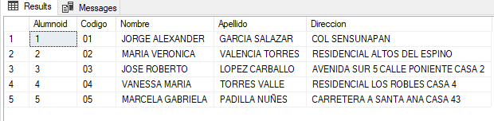

Lenguaje e interfaz de una BD, Lenguaje formal de consultas SQL y Comandos SQL
5. Lenguaje Formal de Consultas: Comando DELETE
Contenido
Es el comando que se utiliza para eliminar permanentemente uno o más filas (registros) de una tabla. Si bien en ocasiones no es recomendable eliminar físicamente los registros (sino lógicamente) el comando DELETE permite hacer la eliminación física (siempre y cuando esto o contradiga las restricciones o integridad de la BD).
Su sintaxis, más simplificada, es la siguiente:
DELETE FROM NombreTablaCon esa línea de consulta, se eliminaran todos los registro de una tabla, es decir es útil vaciar por completo los registros de toda la tabla, pero si se desea eliminar solo una parte de los registros se debe usar la cláusula WHERE mencionada anteriormente en el comando SELECT, con ello se debe especificar que registros en particular se desean eliminar. Por ejemplo, si contamos con el ejemplo los registros siguientes dentro de la tabla Alumno:

Y queremos eliminar el alumno JOSE ROBERTO LOPEZ CARBALLO, la consulta a ejecutar seria.
DELETE FROM ALUMNO where Nombre= 'JOSE ROBERTO LOPEZ CARBALLO'Es posible indicar la eliminación por cualquier campo de criterio, pero para una mayor rapidez podemos hacerlo a través del campo establecido como llave primaria.
DELETE FROM ALUMNO where Alumnoid = 3Consideraciones al eliminar registros
Encabezado 2
Si se desea eliminar un registro de una tabla fuerte y el registro está siendo referenciado por otro registro en otra tabla lanzara un error de eliminación ya que no puede eliminarse un registro de llave primaria que está siendo usada como llave foránea en otra tabla.
Encabezado 2
Es indispensable usar la cláusula WHERE sino se quiere eliminar todos los registros de la tabla.
Obra publicada con Licencia Creative Commons Reconocimiento Compartir igual 4.0